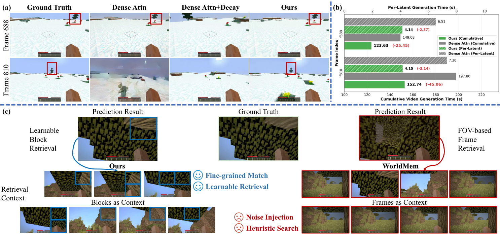
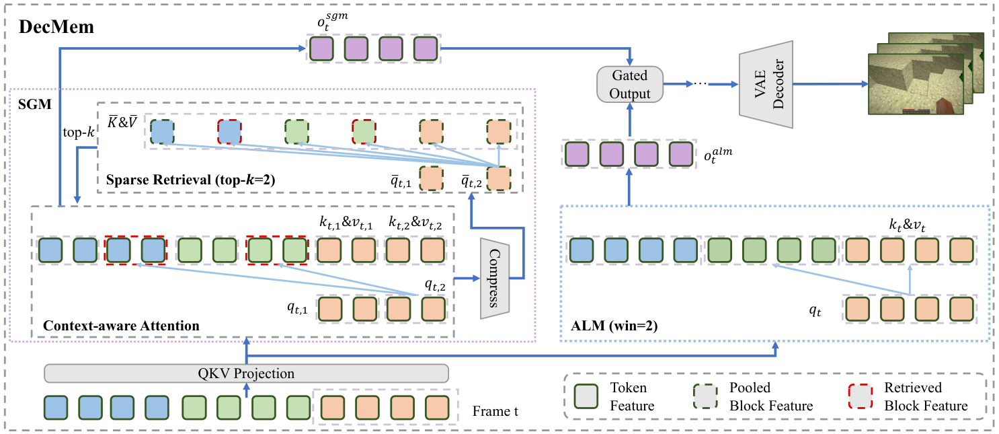

DecMem
Towards Minute-Long Consistent World Generation with Decoupled Memory
1 The University of Hong Kong 2 Kling Team, Kuaishou Technology
†Corresponding Author
1 The University of Hong Kong 2 Kling Team, Kuaishou Technology
†Corresponding Author
Recent advances in video generative models have promoted rapid progress in controllable world models. However, maintaining fine-grained spatio-temporal consistency under long-horizon reasoning remains a key challenge. In this work, we move beyond explicit 3D memory and coarse frame-level implicit modeling, and propose a fine-grained, learnable, and scalable memory for consistent world generation.
We first identify two fundamental limitations of naïve learnable memory architectures in long-horizon extrapolation, namely computational inefficiency and attention dispersion. Through a systematic analysis of attention dispersion, we propose DecMem, a decoupled memory architecture that employs Sparse Global Memory for efficient fine-grained access to global history and Anchored Local Memory for stable and high-quality extrapolation.
Extensive experiments demonstrate that DecMem significantly outperforms current state-of-the-art methods. By ensuring precise and efficient long-term memory and achieving superior extrapolation capabilities, DecMem enables minute-level controllable long video generation with high fidelity and consistency.

Overview of DecMem motivation.
(a) Quality and Consistency: Visual quality and spatio-temporal consistency of different long-horizon extrapolation methods (memory bank initialized with 221 frames). Prior methods fail to jointly preserve fidelity and consistency, while ours breaks this trade-off and sustains fine-grained memory under long rollouts.
(b) Computational Efficiency: Generation latency of our method and naïve Dense Attention (memory bank initialized with 221 frames). Our sparse block retrieval substantially reduces cost without sacrificing quality.
(c) Learnable Block Retrieval: Comparison of our learnable block retrieval against FOV-based frame retrieval (e.g., WorldMem).

Overview of DecMem architecture.
(a) Sparse Global Memory (SGM): Combines a block-level sparse retrieval module and a context-aware attention module for long-term memory fine-grained retrieval in an end-to-end manner, enabling efficient access to global history with bounded cost.
(b) Anchored Local Memory (ALM): Keeps short-term transition smooth and supports stable, high-quality extrapolation by anchoring generation on recent local context.
(c) Decoupled Pipeline: DecMem comprises decoupled memory for long-term consistency and extrapolation generalization while keeping computational cost low. For clearer visualization, we display 3 frame latents as key & value and the last frame indexed by t as query; each frame contains 2 blocks with 2 tokens per block.
For clearer visualization, we display 3 frame latents as key & value and the last frame indexed by t as query; each frame contains 2 blocks with 2 tokens per block.
Qualitative comparison with state-of-the-art methods (We use 221 frames for memory bank initialization.).
Minute-long video generation results with 221 frames for memory bank initialization. The left side shows the ground truth (GT). On the right side, the frames highlighted with red boxes are the predicted frames, while the frames without red boxes are the memory frames. .
@article{your2026key,
title={Your Paper Title},
author={Author, One and Author, Two},
journal={arXiv preprint arXiv:XXXX.XXXXX},
year={2026}
}